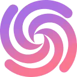

МолекулаАгрегаторы нейросетей
Молекула объединяет модели для текстов, изображений, видео и музыки. В одном аккаунте можно подобрать инструмент под этап работы, сохранить инструкции проекта и использовать готовые роли.
К задаче в МолекулеРаздел «Для сценаристов»: варианты ИИ для этой задачи, описания возможностей и переходы к обзорам. Сравните несколько решений на одинаковом примере.
Разработайте короткую сцену разговора двух персонажей, чьи цели расходятся. Передайте место действия, отношения и скрытый конфликт; оцените, проявляются ли мотивы через реплики и поступки, прежде чем переносить эпизод в полный сценарий.
Напиши сцену в мастерской: владелец хочет продать старый станок, ученик пытается его сохранить. Покажи конфликт через действия и короткие реплики, без поясняющего монолога и неожиданного примирения.
Молекула объединяет модели для текстов, изображений, видео и музыки. В одном аккаунте можно подобрать инструмент под этап работы, сохранить инструкции проекта и использовать готовые роли.
К задаче в МолекулеСравнивать «AI Dungeon (aidungeon.com)» с другими инструментами раздела «Игры» удобнее на одинаковом исходном материале.
Сравнивать «Heartstring AI» с другими инструментами раздела «Создание текстов» удобнее на одинаковом исходном материале.
Сравнивать «AI Dubbing by ElevenLabs» с другими инструментами раздела «Дубляж и переозвучка» удобнее на одинаковом исходном материале.
AIVA создаёт музыкальные композиции с помощью ИИ для творческих проектов. При выборе направления используются готовые стили, эмоциональное настроение и музыкальные влияния. Сервис ориентирован на подготовку саундтреков, где автору нужно определить характер звучания; условия прав на результат следует рассматривать отдельно от самой функции генерации.
«Akkadu AI Subtitles» работает с текстом субтитров.
«iFable AI» представлен в разделе «Книги». При выборе проверьте нужную операцию и условия работы с результатом.
«Neonlife AI» представлен в разделе «ИИ-ассистент». При выборе проверьте нужную операцию и условия работы с результатом.
Replicastudios преобразует текст в речь и предлагает библиотеку голосов. В описании также представлено обучение ИИ-модели для имитации актёров озвучивания. Интеграция с Unreal и iClone дополняет подготовку голосового материала, связывая речевые инструменты и выбранную пользователем среду работы над игровым проектом.
Для «Soca AI» сначала определите свою задачу и требуемый результат. Карточка относится к направлению «Видео».
speakflow.com показывает сценарий в онлайн-суфлёре и поддерживает прокрутку по голосовым командам. Тексты можно синхронизировать между устройствами. В продукте также предусмотрена совместная видеозапись, связывающая работу над сценарием и процесс подготовки ролика с участием нескольких авторов или исполнителей.
WAN Video создаёт изображения и видео по текстовым запросам и визуальным исходникам. Предусмотрены ролики по фотографии, использование видео-референсов и редактирование, а также звуковое сопровождение. Продукт относится к генеративному направлению Alibaba; способы задания сцены объединяют словесное описание с передачей визуального примера.
«Sassbook AI Story generator» помогает развивать текст истории.
Verble помогает составлять речи для разных случаев с использованием ИИ. Сценарий связан с устным убеждением и построением истории, а в описании упомянута работа с тренерами выступлений. Помощник предназначен для подготовки звучащего текста, который пользователь планирует произнести перед выбранной аудиторией.
Сравнивать «VoiceDub» с другими инструментами раздела «Генерация голоса» удобнее на одинаковом исходном материале.
«Voxxio» помогает развивать текст истории.
«Komiko» помогает составлять визуальные панели комикса.
Comicai помогает готовить комиксы с персонажами, фонами и композицией отдельных панелей. В описании продукта выделены использование изображений как ориентиров и согласование внешности между сценами. Для одной последовательности проверьте узнаваемость героев, расположение двух персонажей и то, как соседние кадры передают действие без дополнительных пояснений.
Lazylines AI, описанный также под названием Vamos, помогает готовить материалы для коротких видео и соцсетей. Работа включает разбор трендов и роликов, написание начальных реплик, сценариев и постов в заданной манере бренда. В одном чате предусмотрен доступ к нескольким текстовым моделям для этих задач.
«Typecast AI» позволяет создавать воспроизведение голоса.
Phenaki генерирует видео на основе текстовых запросов средствами модели ИИ. В описании представлены обучение на видеоматериалах и сочетаниях изображений с текстом. Эти данные относятся к подготовке модели, которая связывает словесное описание сцены с созданием её визуальной последовательности.
«AI Sora Online» готовит текстовый черновик по условиям задачи. «AI Sora Online» помогает подготовить персонализированный видеоматериал.
«AI Studios» получает речевую запись из текста.
«Chorus» представлен в разделе «Создание музыки». При выборе проверьте нужную операцию и условия работы с результатом.
Сравнивать «Prescene» с другими инструментами раздела «Написать сценарий для видео» удобнее на одинаковом исходном материале.
«AI Trailers» представлен в разделе «Видео». При выборе проверьте нужную операцию и условия работы с результатом.
AiVOOV преобразует текст в голосовую запись с участием ИИ и предлагает выбор языков и голосов. Среди направлений применения есть видео и подкасты, а также электронное обучение. Пользователь подготавливает озвучку письменного материала для выбранного проекта, рассматривая доступные варианты его звучания.
Brev AI создаёт музыку и песни по текстовому запросу, включая инструментальные и вокальные варианты. В наборе также описаны написание слов, удаление вокала и разделение аудио на отдельные составляющие. Подготовку музыкального материала дополняют инструменты для обложек, звуковых эффектов и видео с текстом песни.
«Character GPT» представлен в разделе «ИИ-ассистент». При выборе проверьте нужную операцию и условия работы с результатом.
Сравнивать «Infinity ai» с другими инструментами раздела «Видео» удобнее на одинаковом исходном материале.
Для «Metos» сначала определите свою задачу и требуемый результат. Карточка относится к направлению «Арт».

Sudowrite рассчитан на задачи, где нужно редактировать уже написанный материал. Ещё одно направление работы: готовить текст по теме и требованиям к содержанию.
«Atlabs» представлен в разделе «Видео». При выборе проверьте нужную операцию и условия работы с результатом.
Сравнивать «Charisma» с другими инструментами раздела «Видео» удобнее на одинаковом исходном материале.
Сравнивать «Instant Singer» с другими инструментами раздела «Генерация голоса» удобнее на одинаковом исходном материале.
«Voicely 2.0» представлен в разделе «Создание контента». При выборе проверьте нужную операцию и условия работы с результатом.
«AI Comic Factory (aicomicfactory.com)» помогает составлять визуальные панели комикса.
«AIVideoGenerator.me» создаёт видеоматериал по заданию. «AIVideoGenerator.me» также помогает подготовить персонализированный видеоматериал.
Scene One помогает писать текст и организовывать проект из отдельных сцен. Упрощённый редактор дополнен ИИ-помощником и собственной вики для сведений о работе. Совместимость с разными устройствами позволяет продолжать проект в нескольких средах, сохраняя связь между написанием эпизода и организацией информации о нём.

Звукограм преобразует текст в речь с помощью нейроголосов, включая варианты на русском языке. В наборе также описаны расшифровка аудио и видео, озвучивание субтитров и извлечение звуковой дорожки из YouTube. Дополняют работу библиотеки музыкальных материалов и звуковых эффектов для подготовки медиапроектов.
ChatGPT Phantom подготавливает статьи и сценарии, а также стенограммы средствами ИИ. Продукт распространяется с открытым исходным кодом и поддерживает пользовательские инструкции. Перевод, проверка заимствований и связь с поисковыми системами дополняют инструменты, которые пользователь рассматривает при подготовке текстового материала.
Scrip AI подготавливает сценарии небольших видеороликов с участием ИИ. Инструмент предназначен для авторов контента и компаний, а также преподавателей. Работа относится к подготовке письменной основы видео, которую пользователь рассматривает при представлении своей темы в коротком формате выбранного медиаматериала.
«FilmFlow» подготавливает письменный сценарий.
«VoiceOverMaker» готовит текстовый черновик по условиям задачи.
Для «Boords» сначала определите свою задачу и требуемый результат. Карточка относится к направлению «Видео».
Для «OddBooks» сначала определите свою задачу и требуемый результат. Карточка относится к направлению «Книги».
Runway объединяет генерацию видео, преобразование кадров и творческие рабочие процессы. Начинать удобнее с конкретного плана сцены и требований к сохранению объектов.
Страница 1 из 1